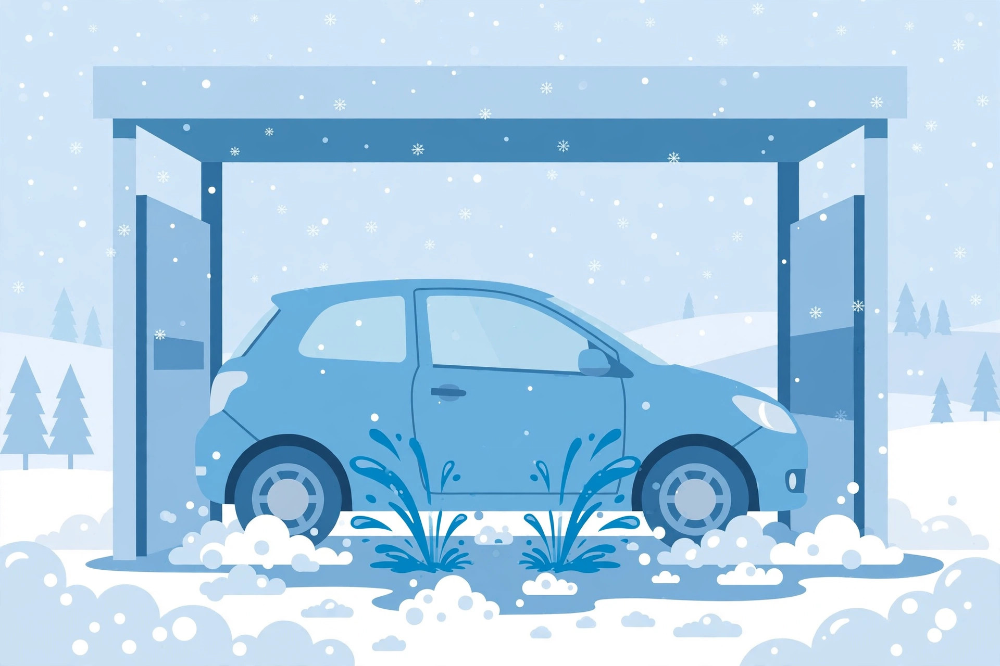

Washing Your Car in Winter: The Below-Freezing Routine and Whether Unlimited Plans Pay Off

A winter car wash is not about looks. Road salt is a slow chemical attack: left alone, it works into seams, chips, and the undercarriage and starts rust that only gets expensive. Washing every week or two through salt season is the most effective defense — but freezing weather has its own rules. Here is the routine, the method comparison, and the math on unlimited wash plans.
Wash methods compared
| Method | Winter strengths | Watch out for |
|---|---|---|
| Touchless automatic | No brushes touching paint; many offer underbody spray; quick in the cold | Less scrubbing power on heavy grime |
| Soft-touch automatic | Better cleaning than touchless | Brushes can carry grit; risk of fine scratches |
| Self-serve heated bay | You control the undercarriage rinse; sheltered from wind and ice | Takes longer; you get wet too |
| Driveway | Free; thorough if you are careful | Only sensible above freezing; you must dry everything completely |
The golden rule from detailing guides: do not wash outdoors at or below 0°C. Water freezing on contact means frozen locks, stuck doors, and ice in seals. Around 4°C and up is the comfortable zone for a driveway wash — below that, use a heated bay or an automatic wash.
The below-freezing wash routine, step by step
- Pick your moment. The mildest day of the week, or a heated self-serve bay. Avoid washing right before a deep freeze overnight.
- Prep the freeze points. Put a strip of tape over the door locks before an automatic wash to keep water out. Wipe rubber door seals with silicone lubricant so doors cannot freeze shut.
- Start underneath. Blast the undercarriage first — underbody spray at a wash, or an angled wand at a self-serve bay. That is where salt does its worst work.
- Wash one section at a time with lukewarm water — never hot, which can strip wax. Wash, rinse, and move on; do not let soap sit.
- Dry completely, immediately. Microfiber towels plus a blower or compressed air. Hit the door jambs, mirrors, handles, and locks — any water left behind becomes ice.
- Finish the details. A shot of de-icer in the lock cylinders displaces moisture. Wipe wiper blades with a cloth dampened in rubbing alcohol to keep ice from forming on them.
Before winter: the prep that makes washing easier
Touch up paint chips before salt season with automotive touch-up paint — a chip is a direct path for salt to bare metal. A coat of wax or sealant before the first storm gives salt less to grip. And heated-garage parking accelerates the corrosive reaction, so garage-parked cars need washing just as often.
Does an unlimited wash plan pay off? The math
The standard advice is a wash every 10–14 days through winter — roughly 2 to 3 washes a month. Here is what that costs in Toronto, with prices checked 2026-10-11 (prices change; verify current pricing before deciding):
- Pay per wash: about $11 for a basic exterior wash × 2.5 washes/month = ~$27.50/month.
- Unlimited plan A: $21.99/month for unlimited washes — but it requires a 12-month contract, so you pay through summer too.
- Unlimited plan B: $27.99/month plus HST, no long-term contract mentioned, valid across multiple locations.
Break-even is about 2 washes a month at these prices: wash twice monthly and the unlimited plan roughly ties pay-per-wash; wash weekly and it wins clearly. The contract is the real decision — a 12-month commitment only makes sense if you will actually wash year-round. If you only care about the November-to-April salt season, a no-contract plan you can cancel in spring is the better fit.
What success looks like
By spring, your wheel wells and rocker panels show no new rust bubbling, door seals are intact, and locks work on the first try. You washed roughly every two weeks, the undercarriage got rinsed each time, and no paint chip turned into a rust spot. That is a winter wash routine that worked.
FAQ
Can I just rinse with plain water between washes?
Yes — a plain-water rinse of the undercarriage between full washes flushes
salt before it bonds.
Is it bad to wash right before a freeze?
It raises the odds of frozen locks and seals. Wash on the mildest available
day, dry thoroughly, and lube the seals.
The bottom line
Wash the salt off every week or two, always include the undercarriage, and never let water sit where it can freeze. The unlimited plan only wins if you actually show up — run the math first.